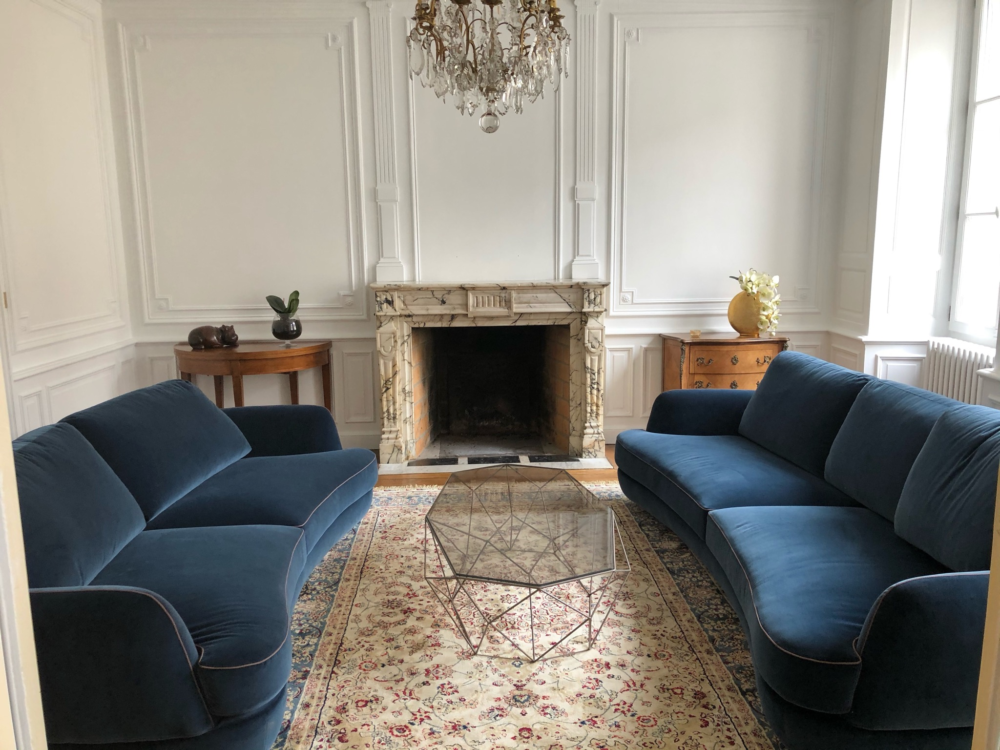
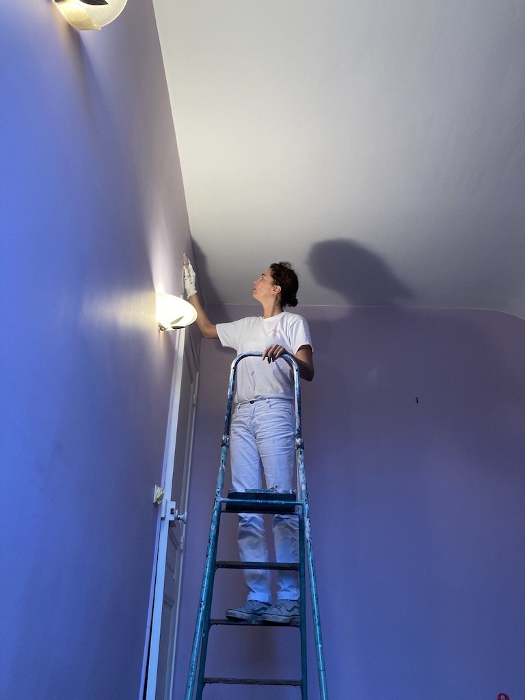
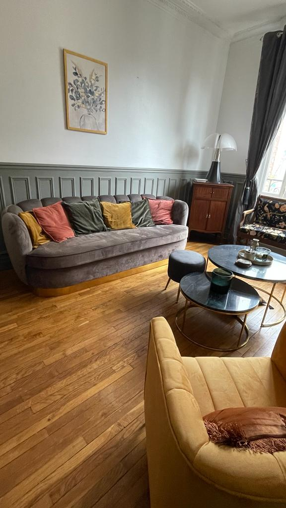
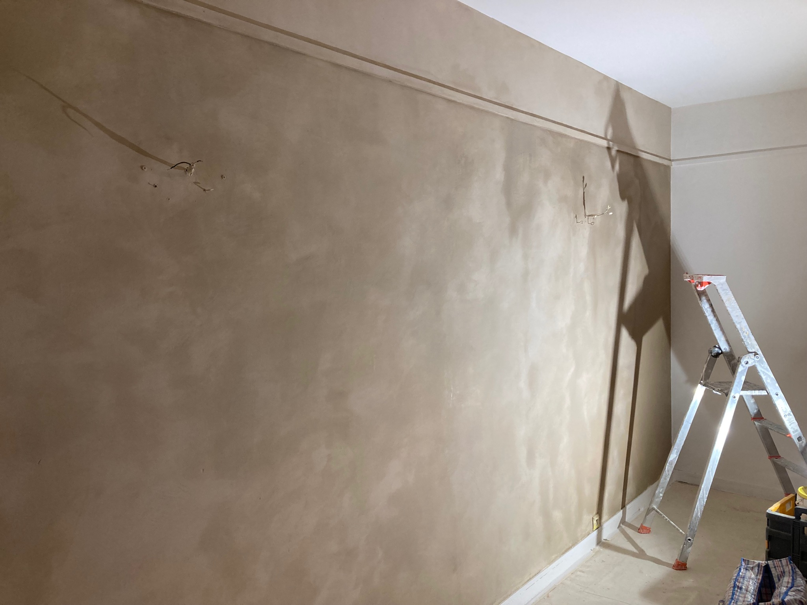
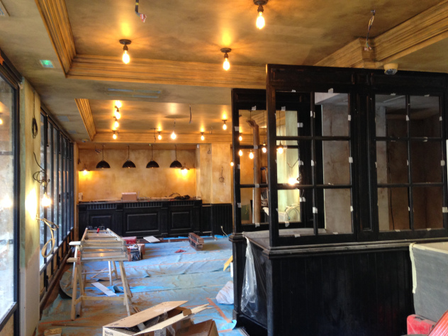
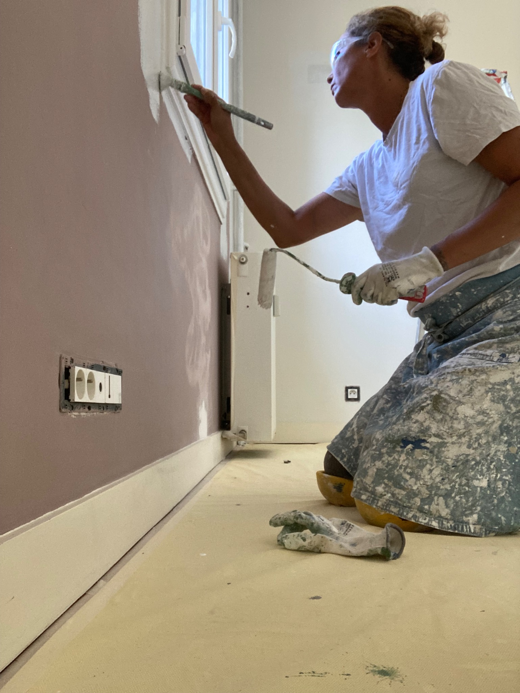

Distinction

Audrey Pieters
Peintre en bâtiment et peintre décoratrice
À Paris et dans l’Est parisien
Chaque chantier est unique. Qu'il s'agisse d'une rénovation complète, d'un rafraîchissement, de la pose d'un revêtement mural, de la réalisation d'un décor peint ou d'un enduit décoratif, j'apporte le même soin à la qualité d'exécution de la mission que vous me confiez.
J'interviens également régulièrement aux côtés d'architectes, décorateurs et autres professionnels du bâtiment sur des projets de rénovation et d'aménagement intérieur.
Demander un devis
Distinction

Réseau professionnel
Ma manière de travailler
Une préparation adaptée des supports, une application rigoureuse et une attention particulière portée aux finitions.
Les lieux sont protégés avec soin, le chantier est tenu propre et les interventions sont organisées pour limiter les contraintes dans votre intérieur.
Écoute, conseils, devis clairs et communication régulière tout au long du projet.

À propos
J'aime mon métier pour ce qu'il permet : travailler avec mes mains, transformer les lieux et contribuer à créer des intérieurs dans lesquels mes clients se sentent bien.
Installée à Nogent-Sur-Marne, je travaille dans le secteur de l'Est parisien et à Paris, principalement seule afin d’assurer un suivi personnalisé. Pour les projets plus importants, je peux également mobiliser une équipe de professionnels de confiance.
En savoir plusSavoir-faire
Rénovation, rafraîchissement, réparation après dégât des eaux, murs, plafonds et conseils en couleurs.
Pose de papiers peints, panoramiques, toiles et autres revêtements décoratifs.
Patines, peintures à la chaux, enduits décoratifs, bétons cirés, effets de matière et imitations.
Portfolio






Avis clients
★★★★★« J'avais confiance en Audrey dès la première rencontre. »
Emma L.
★★★★★« Le travail est soigné, les finitions sont impeccables et le chantier a été tenu propre. »
Diane B.
★★★★★« Professionnelle, fiable, de bon conseil et minutieuse. »
Caroline L.
★★★★★« À cause de toi je suis en retard à tous mes rendez-vous, je reste dans l'entrée à contempler la peinture de mes murs... »
Catherine B.
Parlons de votre projet
Je me déplace pour étudier votre projet, vous conseiller et établir un devis personnalisé.
Demander un devis